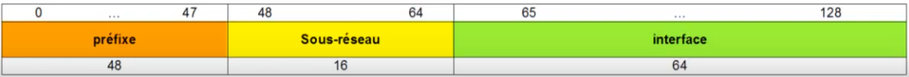

Adressage IP : Adressage IPv6
Plan
• Introduction
• Rappels
• Scope
• Types d'adresses unicast
• Sous-réseaux
• Adresses locales de lien
• Adresses locales uniques
• Adresses globales unicast
• Multicast
Introduction
• Mếme si la migration de l'IPv4 à l'IPv6 n'a, clairement, toujours pas réellement eu lieu
◇ elle devient de plus en plus nécessaire
◇ face à la prénurie d'adresse IPv4
• Même si la notation hexadécimale peu paraître complexe
◇ comprendre l'IPv6 n'est pas bien plus difficile que pour l'IPv4
• Donc, même si nous n'en rencontrons encore que peu
◇ nous allons en rencontrer de plus en plus
◇ et il est plus que nécessaire de s'y préparer
▪ d'autant plus que cela ne représente que peu de temps d'apprentissage
Rappels
• Une adresse IPv6 est codée sur 128 bits
◇ soit ent théorie 3.4*10^38 = 340 sextillions d'adresses
▪ soit 340 milliards de milliards de millards de milliards !
▪ soit 48 quadrillard (10^27) d'adresses par personnes dans le monde !
- soit de quoi changer 17 billiards (10^15) de fois d'IP par seconde en 85 ans pour une personne possédant 1 millard de machine
• Tout cela ne reste que de la théorie
◇ car bien entendu, de “très” nombreuses adresses ne sont pas utilisables
• Mais on pourrait donc tout de même établir des adresses uniques mondialement pour chaque machine !
◇ résolution du problème de pénurie du nombre d'adresses IPv4
Scope
• unicast
◇ adresses désignant une seul inteface d'un hôte
• anycast
◇ nouveau concept
◇ “le plus proche” / “le plus efficace”
◇ adresses d'un noeud parmi un groupe de noeuds
▪ désigne “n'importe quel” membre ce noeud
• multicast
◇ abandon des adresses de broadcast
◇ désigne un groupe d'interfaces
◇ chaque interface étant libre de s'abonner à un groupe et de le quitter, à tout moment
▪ moins pénalisant que le broadcasting IPv4
Types d'adresses unicast
• adresses de boucle locale (loopback)
◇ ::1/128
◇ limitée à une utilisation interne pour un hôte
• adresses de liason local (link-local)
◇ uniques sur un lien donnée
◇ purement locales (adresses locales de lien)
▪ non routables
◇ ou uniques (mondialement)
▪ RFC 4193
• adresses globales
◇ uniques dans le monde
Sous-réseaux
• Même système que pour l'IPv4 classless
◇ notation CIDR du masque
• Exemple :
◇ 2001:db8:1:1a0::/59
▪ 2001:db8:1:1a0:0:0:0:0 à 2001:db8:1:1bf:ffff:ffff:ffff:ffff
• cf https://en.wikipedia.org/wiki/IPv6_subnetting_reference
Adresses locales de lien
• adresses fe80::/10
◇ masque en /64
• purement locales
◇ non routable
◇ uniquement utilisables sur les réseau de niveau 2 (segment réseau : lien ou domaine de broadcast)
• alloué automatiquement (le plus souvent à partir de l'adresse MAC) ou manuellement
◇ requis sur toute interface sur lesquelles IPv6 est activé
◇ pour d'autre protocoles liés à IPv6 (NDP, DHCPv-, etc ...)
• uniques sur un lien uniquement
◇ ce qui permet à un hôte d'utiliser éventuellement la même adresse pour plusieurs interfaces
• aucun sous-réseau
◇ toutes les machines appartiennent au réseau fe80::/64

Adresses locales uniques
• fc00::/7 (pour Internet)
◇ et fd00::/8+ (pour L=1, pour les réseaux locaux)
• ne sont routables que sur les sites qui le souhaitent
◇ pas sur internet
◇ équivalent des plages d'adresses privées (RFC 1918) IPv4
• ID Globale : identifiant unique de l'organisation
◇ choisi pseudo-aléatoirement
• L : 1 si l'ID Globale est assigné localement
Adresses globales unicast
• 2000 ::/3
◇ soit 1000 0000 0000 0000 ::/3
• 1/8ème de l'espace total d'adressage IPv6 utilisé seulement (la plupart en 2001::/16)
◇ afin de limiter la taille des tables de routage
◇ assignées par blocs de /23 à /12 par les Registres Internet Régionaux (cf IANA)
▪ exemple : SFR détient le bloc 2001:4c18::/32
▪ routables sur internet
• moins d'un autre 1/8ème est réservé
◇ ex : 2002::/16:adresse 6to4
▪ permettent d'acheminer le trafic IPv6 via un ou plusieurs réseaux IPv4
• Toutes les autres adresses routbales (plus des trois quarts) sont actuellement réservées pour usage utltérieur

Multicast
• ff00::/8
• propres à l'application
• exemple : ff02::1:ff00:0/104
◇ pour découvrir l'adresses MAC d'un hôte dont l'adresse IPv6 est connue
◇ avec NDP (Neighbor Discovery Protocol)
• Drapeau : 3 bits définis par la RFC 4291
◇ le bit le plus significatif étant réservé à un usage ultérieur
• Scope : domaine de validité de l'adresse
Ce qu'on a couvert
• Adressage IPv6
◇ types d'adresses
◇ éléments
◇ subnetting